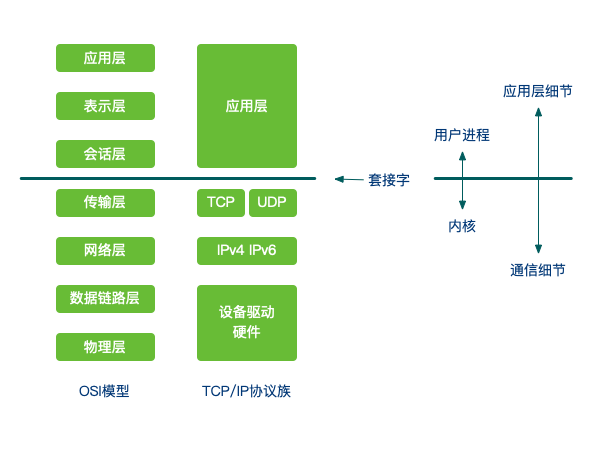
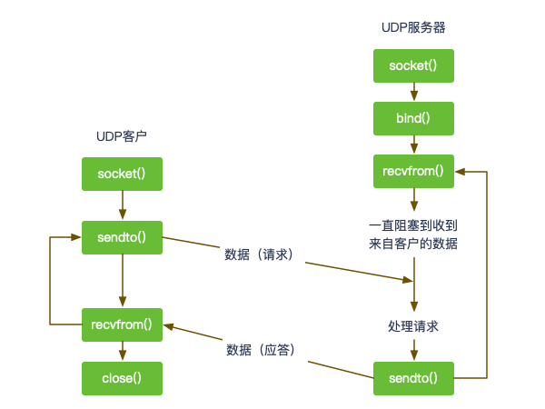
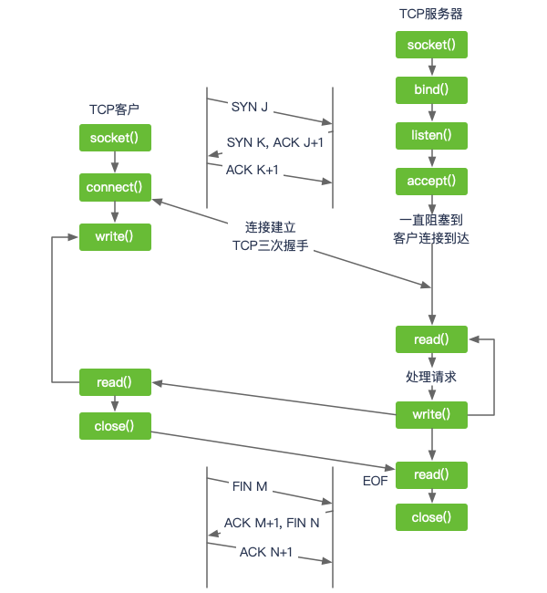
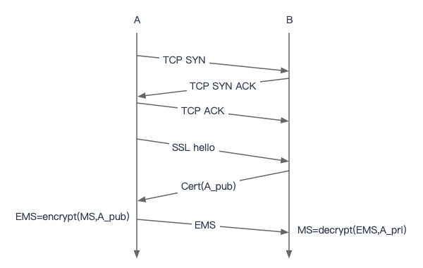
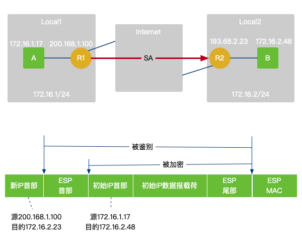

Table of Contents

1 UDP
应用进程往一个UDP套接字写入一个消息，该消息随后被封装到一个UDP数据报，该UDP数据报进而又被封装到一个IP数据报，然后发送到目的地。 如果一个数据报到达了其最终目的地，但是校验和检测发现有错误，或者该数据报在网络传输途中被丢弃了，它就无法被投递给UDP套接字，也不会被源自动重传。 每个UDP数据报都有一个长度。如果一个数据报正确地到达其目的地，那么该数据报的长度将随数据一道传递给接收端应用程序。TCP是一个字节流协议，没有任何记录边界，这一点不同于UDP。

2 TCP

TCP提供可靠性，当TCP向另一端发送数据时，它要求对端返回一个确认。如果没有收到确认，TCP就自动重传数据并等待更长时间。在数次重传失败后，TCP才放弃。
TCP含有动态估算客户和服务器之间的往返时间（round-trip time，RTT）的算法，而且持续估算一个给定连接的RTT。
TCP通过给其中每个字接关联一个序列号对所发送的数据进行排序。如果这些分节非顺序到达，接收端TCP将先根据它们的序列号重新排序，再把结果数据传递给接收应用。
UDP不提供可靠性。UDP本身不提供确认、序列号、RTT估算、超时和重传等机制。UDP数据报可能丢失或颠倒顺序，UDP应用需要处理这些情况。
TCP提供流量控制。TCP总是告知对端在任何时刻它一次能够从对端接收多少字节的数据（通告窗口）。在任何时候，该窗口指出接收缓冲区中当前可用的空间量，从而确保发送端发送的数据不会是接收缓冲区溢出。该窗口时刻动态变化：当接收到来自发送端的数据时，窗口大小就减小，但是当接收端应用从缓冲区中读取数据时，窗口大小就增大。当TCP对应某个套接字的接收缓冲区已满，导致它必须等待应用从该缓冲区读取数据时，方能从对端再接收数据。
UDP不提供流量控制。
/// Client const net = require('net'); const client = net.createConnection(3000, '127.0.0.1'); client.on('connect', function(){ console.log('Connection Established'); }); client.on('data', function(data){ console.log('Received: '+ data); }); client.on('close', function(data){ console.log('Connection disconnected'); }); client.end('I\'m gone!'); /// Server const net = require('net'); const server = net.createServer(function(socket){ console.log('Received request'); socket.on('data', function(data){ console.log('Received data: '+ data); socket.write('Hello, I\'m server!'); }); socket.on('close', function(){ console.log('Client disconnected'); }); }); server.listen(3000, '127.0.0.1', function(){ console.log('Begin listening'); });
3 SSL
A与B的通信过程，（1）A生成主密钥（master secret，MS）；（2）A通过证书中B的公钥加密MS发送给B，B用私钥解密得到MS；（3）A、B用MS生成用于后续通信的数据加密和验证数据完整性的对称密钥。

4 VPN
4.1 IPsec
在从源实体向目的实体发送IPsec数据报之前，源和目的实体创建了一个网络层的逻辑连接（Security Association，SA）。路由器R1维护有关SA的状态信息（加密完整性检查等）。无论何时路由器R1需要构建一个IPsec数据报经过这个SA转发，它访问该状态信息已决定它应当如何鉴别和加密该数据报。类似地，路由器R2将维护对此SA的相同的状态信息，并将使用该信息鉴别和加密任何从该SA到达的IPsec数据报。

4.2 OpenVPN
在OpenVPN中，如果用户访问一个远程的虚拟地址（属于虚拟网卡配用的地址系列，区别于真实地址），则操作系统会通过路由机制将数据包（TUN模式）或数据帧（TAP模式）发送到虚拟网卡上，服务程序接收该数据并进行相应的处理后，通过Socket从外网上发送出去，远程服务程序通过Socket从外网上接收数据，并进行相应的处理后，发送给虚拟网卡，则应用软件可以接收到，完成了一个单向传输的过程，反之亦然。